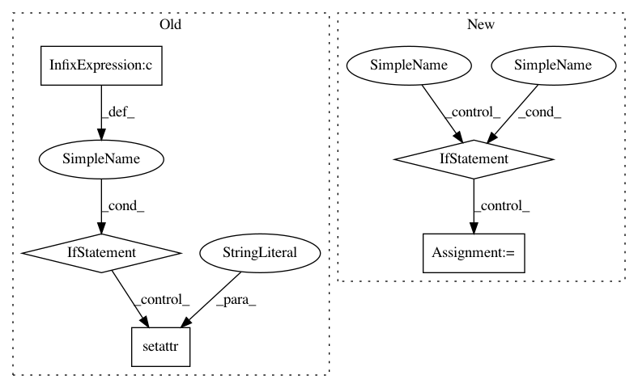

c073de4002f7a72babc8fd6ecdcd90c141be2c08,Orange/widgets/utils/datacaching.py,,getCached,#Any#Any#Any#Any#,3
Before Change
def getCached(data, funct, params = (), kwparams = {}):
if not data: return None
if getattr(data, "info", None) == None or data.info["__version__"] != data.version:
setattr(data, "info", {"__version__": data.version})
if data.info.has_key(funct):
return data.info[funct]
else:
if type(funct) != str:
After Change
if data is None:
return None
info = getattr(data, "__data_cache", None)
if info is not None:
if funct in data.info:
return data.info(funct)
else:
info = data.info = {}
if isinstance(funct, str):
return None
if kwparams is None:
kwparams = {}
In pattern: SUPERPATTERN
Frequency: 3
Non-data size: 5
Instances
Project Name: biolab/orange3
Commit Name: c073de4002f7a72babc8fd6ecdcd90c141be2c08
Time: 2013-01-21
Author: janez.demsar@fri.uni-lj.si
File Name: Orange/widgets/utils/datacaching.py
Class Name:
Method Name: getCached
Project Name: daavoo/pyntcloud
Commit Name: 55c52a191bb36313c86ea340a024f4fe21eac699
Time: 2016-10-17
Author: daviddelaiglesiacastro@gmail.com
File Name: pyntcloud/pyntcloud.py
Class Name: PyntCloud
Method Name: __init__
Project Name: biolab/orange3
Commit Name: c073de4002f7a72babc8fd6ecdcd90c141be2c08
Time: 2013-01-21
Author: janez.demsar@fri.uni-lj.si
File Name: Orange/widgets/utils/datacaching.py
Class Name:
Method Name: setCached